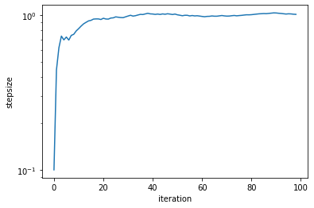
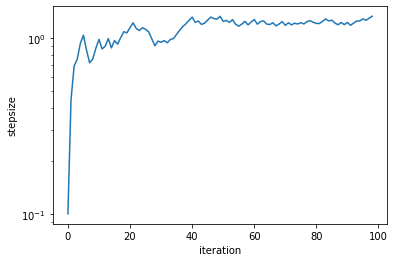

[1]:
import hmc_tomography
import numpy
Tutorial 0.2 - Tuning Hamiltonian Monte Carlo¶
TODO
[2]:
distribution = hmc_tomography.Distributions.LinearMatrix.create_default(10)
[3]:
sampler = hmc_tomography.Samplers.HMC()
[4]:
sampler.sample(
"bin_samples/tutorial_02.h5",
distribution,
autotuning=True,
proposals=100,
learning_rate=1.0,
overwrite_existing_file=True,
)
sys:1: Warning:
Silently overwriting samples file (bin_samples/tutorial_02.h5) if it exists.
[5]:
sampler.plot_stepsizes()
[5]:
<matplotlib.axes._subplots.AxesSubplot at 0x7f1a6326bad0>

[6]:
sampler.sample(
"bin_samples/tutorial_02.h5",
distribution,
autotuning=True,
proposals=100,
learning_rate=0.51,
overwrite_existing_file=True,
)
sys:1: Warning:
Silently overwriting samples file (bin_samples/tutorial_02.h5) if it exists.
[7]:
sampler.plot_stepsizes()
[7]:
<matplotlib.axes._subplots.AxesSubplot at 0x7f19e387da90>
